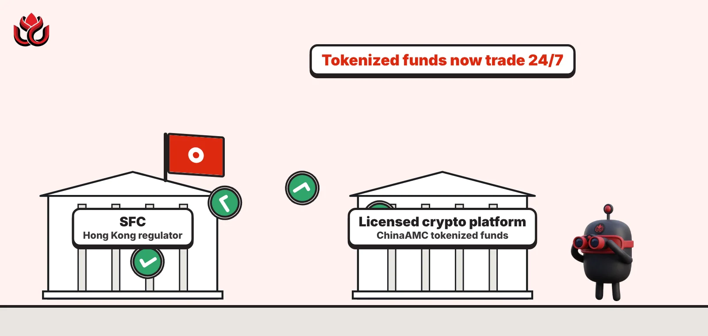
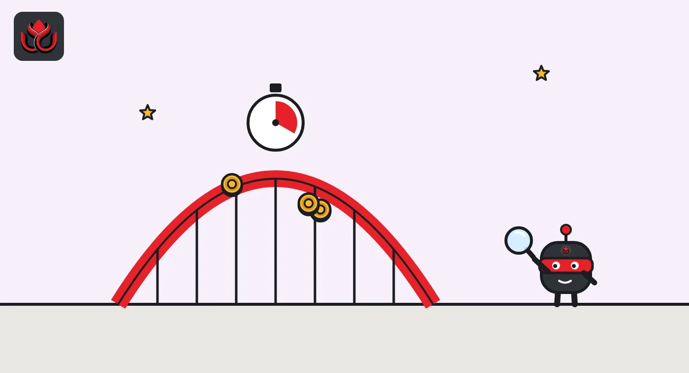

Hong Kong's SFC calls it a world first: tokenized money market funds now trade 24/7
The SFC let two ChinaAMC tokenized funds trade around the clock on a licensed crypto platform. A week later the HKMA moved its own tokenized settlement rail to 24/7 and said regulated stablecoins are next.

Key points
- On October 26, 2026, the SFC approved what it called the world's first secondary trading of tokenized public funds on a licensed virtual asset trading platform.
- The first two products are ChinaAMC's HKD and USD Digital Money Market Funds, tradable around the clock under a pilot framework set in April 2026.
- On November 2 the HKMA said EnsembleTX now supports 24/7 real-value transactions and that trials will soon include regulated stablecoins.
 What DeepSea's data shows
What DeepSea's data shows
Hong Kong's licensed crypto venues are still small next to the global Asian exchanges. In the week of October 5 to 11, DeepSea tracked $63.86M of deposits and $63.13M of withdrawals at HashKey, a net inflow of $734.5K, according to its weekly report.
In the following week, October 12 to 18, DeepSea's Hong Kong line, which consists of HashKey, showed $41.55M in and $48.36M out, a net outflow of $6.82M across 411 deposits and 561 withdrawals, DeepSea's report shows. Over the same week, Binance alone recorded a net outflow of $2.12B. DeepSea's flows use labeled exchange wallets on Ethereum, Tron, Base, Arbitrum, Avalanche and Polygon and do not cover BSC.
Data: DeepSea (desea.io), checked November 1, 2026, 11:28 p.m. ET.
What happened
Hong Kong's Securities and Futures Commission (SFC) approved secondary trading of tokenized public funds on an SFC-licensed virtual asset trading platform (VATP) on October 26, 2026. The SFC called it a world first. Trading started the same day and runs around the clock.
Two existing SFC-authorized funds are in the first batch: the ChinaAMC HKD Digital Money Market Fund and the ChinaAMC USD Digital Money Market Fund. A tokenized fund is a normal fund whose units are also recorded as tokens on a blockchain. Secondary trading means investors buy and sell those units with each other on the platform, rather than only subscribing and redeeming with the fund.
Elisa Ng, the SFC's executive director of investment products, said the launch "puts the SFC's regulatory framework through its paces". She described 24/7 trading as a new building block for Hong Kong's tokenization market.
How the rules work
The SFC built the pilot on its existing rules for exchange traded funds and crypto platforms. It issued a circular on April 20, 2026, setting out what platforms and fund managers must do, covering the trading channel, fair pricing, liquidity provision and disclosure, the regulator said.
The first products are money market funds only. These funds hold short-term, low-risk debt. The SFC said it will watch trading closely and may widen the product range over time, based on market developments and experience.
The regulator also pointed to the next step: tokenized money. Under Project Ensemble, the SFC and the Hong Kong Monetary Authority (HKMA) have worked on tokenized deposit capabilities, and the SFC co-leads the project's work for the asset management industry. The SFC said investors could one day sell fund tokens on a platform at any hour and move the proceeds on instantly.
The HKMA moves its settlement rail to 24/7
One week after the SFC launch, at Hong Kong FinTech Week on November 2, the HKMA said it had advanced EnsembleTX to a new stage that supports 24/7 transactions with real money. EnsembleTX is the settlement platform for tokenized transactions under Project Ensemble. The HKMA said round-the-clock settlement could help banks and clients move funds globally, manage tokenized asset portfolios and run treasury operations.
The HKMA also said it had completed trial trades in which Recognised Dealers bought and sold tokenized Exchange Fund Bills (short-term Hong Kong government debt) in the secondary market. It said it will soon expand the trials to include regulated stablecoins. Hong Kong's first stablecoin issuer licenses went to Anchorpoint Financial and HSBC on April 10, 2026.
The HKMA also launched tConnect Launchpad with Cyberport to test new tokenization use cases, and Project SAGE to build governance for AI agents in finance. HKMA Chief Executive Eddie Yue said Hong Kong "is well placed to capitalise on new growth opportunities in fintech".
The chart below uses DeepSea data to show how much crypto moves through Hong Kong's licensed exchange wallets in a typical week.
Hong Kong exchange flows tracked by DeepSea, October 2026
US$ million
Source: DeepSea weekly reports for October 5 to 11 and October 12 to 18, 2026
Timeline
SFC issues circular on secondary trading of tokenized SFC-authorized products
First secondary trading of two tokenized ChinaAMC money market funds begins on a licensed VATP
SFC CEO Julia Leung speaks on AI and tokenization at FinTech Week
HKMA says EnsembleTX supports 24/7 real-value transactions; stablecoin trials to follow

Why it matters
Speaking on a FinTech Week panel, SFC chief executive Julia Leung said Hong Kong firms lead in tokenization, and that it will grow once it delivers real economic benefits to the market. She also said the SFC will write principles-based guidance for more autonomous AI tools and plans a cybersecurity framework for licensed firms. Round-the-clock trading of a regulated money market fund is a first test of the tokenization idea, because crypto platforms run every day of the week while traditional fund dealing follows business hours.
The SFC did not name the trading platform in its announcement, and it gave no trading volumes.
LC Insight analysis
This section is our reading of the facts above, not a statement of fact.
- We think the real target is cash management for crypto firms and traders. A 24/7 tokenized money market fund competes directly with idle stablecoins sitting on an exchange.
- The likely next step is linking these fund tokens to HKMA-licensed stablecoins or tokenized deposits for instant settlement, which the HKMA says its trials will soon cover.
- DeepSea's small Hong Kong exchange flows suggest local licensed venues still carry little weight on-chain, so early trading volumes in these funds may be modest.
What's next
- First trading volumes and which platforms list the fund tokens
- Whether the SFC widens the pilot beyond money market funds
- HKMA EnsembleTX trials with regulated stablecoins
Disclaimer. This article is based on public information and the sources listed below as of the update time shown. It is for information only and is not investment, legal or tax advice. Figures may change as companies and authorities publish new data.
Sources
- SFC, SFC approves first-ever secondary trading of tokenised public funds (October 26, 2026)
- SFC, Synopsis by Julia Leung at Hong Kong FinTech Week 2026 (November 2, 2026)
- HKMA, Hong Kong FinTech Week 2026 (November 2, 2026)
- HKMA, Granting of stablecoin issuer licences (April 10, 2026)
- DeepSea, Asian KOL Weekly Report with exchange flows, October 5 to 11, 2026
- DeepSea, Weekly Smart Money and Global Money Flows Report, October 12 to 18, 2026